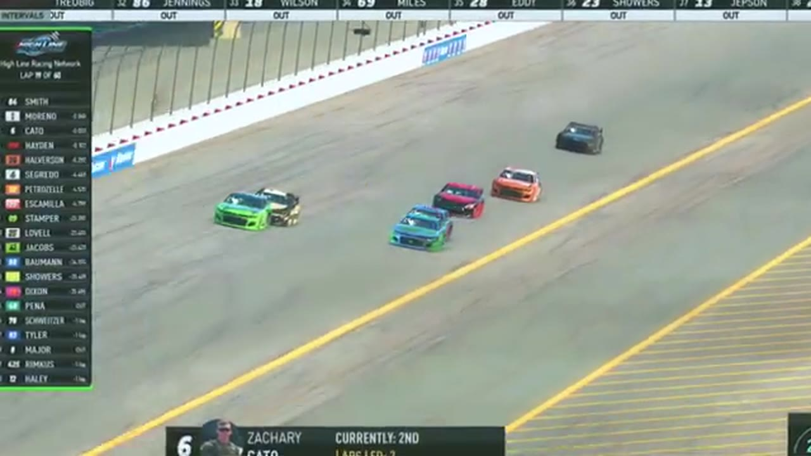

James Smith
Team assignment not stated in the structured owner record.
A REVIEWED STORY FILE
- Official files
- 10
- Central editions
- 2
- Exact tape cues
- 3
- Accepted podiums
- 0
James Smith appears in 10 official HLRN broadcast files across Seasons 1, 2. The current result ledger does not assign this driver a supported top-three finish. A consistently stated team affiliation remains open for owner review. The currently indexed source window runs from November 17, 2025 through June 15, 2026.
Highline Central supplies 2 bounded race editions, while the primary chapter index supplies 3 direct jump points. Daytona is the most frequent named track in the current appearance ledger. The densest direct-tape categories are incident (2 cues) and restart (1 cue). Those counts describe where the name is easiest to find; they are not fault, pace, or performance grades. A source-attributed car frame is published with its original video and timestamp. That is the current discovery map for James Smith.
Official name signals are used for discovery only. They do not become starts, points, incident counts, or an ability grade. This page is deliberately detailed about the tape and restrained about the unavailable competition record. Separately, 2 Highline Live files sit on the bonus shelf and never enter the official season ledger. The displayed name is labeled transcript normalized; that status remains visible so an owner roster can strengthen or correct the identity without rewriting the evidence trail. Those boundaries define James Smith's public HLRN file.
3 featured race-tape cues
These are discovery routes into complete HLRN broadcasts, not performance grades or inferred results.
- S1 / R7 · RESTART
Nick Bowman and Craig Martin bring Michigan back to green
S1 / R7 at 1:47:25: Nick Bowman, Craig Martin, Matt Brown, and James Smith are in the booth's front-pack call as Michigan returns to green. The cut keeps the restart launch and the first lap of lane development together.
Michigan - S1 / R12 · INCIDENT
Dave Schutt spins during Daytona's pit-cycle handoff
The first pit group exits with Juan Escamilla, Trevor Haley, and James Smith in view before Dave Schutt and the No. 29 spin. Brittany Mitchell then inherits the tracked lead while still needing fuel.
Daytona - S1 / R12 · INCIDENT
A James Smith crash signal sends Daytona back to replay
The live camera finds Ryan Wilson still on the lead lap before HLRN receives a James Smith crash indication and rewinds for a better angle. The card marks the review window without inventing contact or fault.
Daytona
Recent editions connected to James Smith
Randy Steals Michigan Late
Trevor Haley and Cory Cook split the stages, but Randy Showers timed the closing run and passed Logan Wilson for his first Highline win.
S1 / R4Escamilla Takes the Superspeedway
James Smith and an uncertain second-stage scorer set the table before Juan Escamilla displaced teammate Trevor Haley in the final run.
Verified team history is not consistently stated. No position-specific top-three result is currently accepted. Name normalization remains reviewable against owner records.